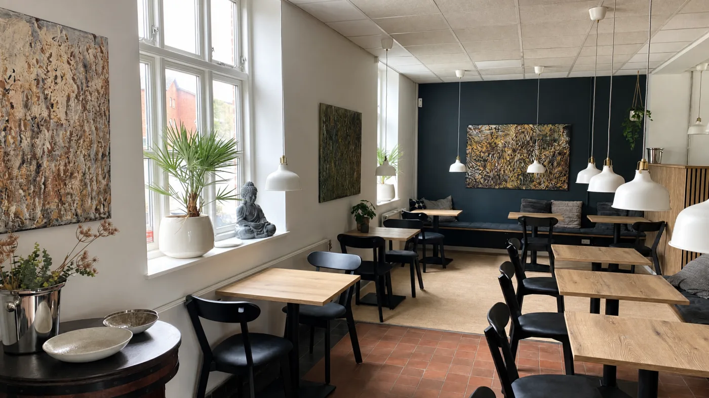
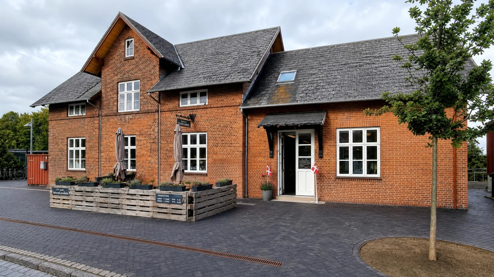

Om Jernbanecaféen
To mennesker.
To køkkener.
Niels og Rapheephon Rasmussen driver caféen i den gamle stationsbygning i Ikast. Her møder dansk kro-mad det thailandske hverdagskøkken.


Køkkenet
Niels og Rapheephon laver mad fra to traditioner.
Niels har blandt andet erfaring fra Le Canard og Norsminde Kro. På Jernbanecaféen tager han den klassiske danske mad ind i et uformelt hverdagskøkken.
Rapheephon kommer med thailandsk hverdagsmad og er en del af den varme modtagelse, når du træder ind på stationen.
Se menukortet
Historien om stedet
Stationen er fra 1877.
Bygningen blev opført i forbindelse med togstrækningen fra Silkeborg til Herning. I dag er den et lokalt mødested med udsigt til togbanen på den ene side og torvet på den anden.
I 2023 overtog Niels og Rapheephon caféen og gav stationsbygningen nyt liv som restaurant og samlingspunkt.
Find osRåvarer og menu
Menuen følger køkkenet.
Menuen skifter løbende. Vi serverer både dansk kro-mad og thailandsk hverdagsmad, og dagens ret bliver lagt op, når køkkenet har valgt den.
Se aktuelle retter